Virtuell arm for funksjonshemmede
Rapport om prototype til en tungestyrt musepeker for bevegelseshemmede. PDF-utgave.
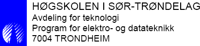
Stian Rishaug, Bastian S. Solem, Aleksander Uthus og Vegard Øye.
Veileder: Herman Ranes.
Oppdragsgiver: SINTEF.
Sammendrag
På oppdrag fra SINTEF er det laget en prototype til en tungestyrt musepeker som kan brukes på Microsoft Windows via standard HID-musegrensesnitt. Musepekeren aktiveres av forspente trykkfølsomme resistanser av typen FSR-400 og FSR-402. Disse sensorene er svært følsomme, og har en hysteresefunksjon ved kontinuerlig trykk. Det er derfor laget en automatisk kalibreringsrutine som bruker av musen kan aktivere manuelt i tilfellet musepekeren oppfører seg uønsket.
For plassering av sensorene er det laget en justerbar hodebøyle. Hodebøylen er bygd av et noe svakt material, og måten sensorene er festet på, bør forskes videre på. Ved videreutvikling av den valgte designen kan hodebøylen bli meget bra.
Elektronikken som behandler data og «styrer» musepekeren, er demokretsen AT90USBKey fra Atmel. Kretsen har innebygde ADC-er, som benyttes til tolking av sensordata. Den gjør bruk av USB-grensesnittet for overføring av data, så vel som energitilførsel. Det er integrert en spenningsregulator som benyttes til å forspenne sensorene. Regulatoren er sterk nok til å forsyne eventuelle tilleggskretser.
Programkoden er skrevet for å være fleksibel angående antall sensorer og portene de kobles til, så vel som valg av mikrokontroller. Programkoden foreligger som vedlegg til rapporten.
Bruk av musen fungerer slik: Brukeren starter en bevegelse og stopper eller endrer retning ved ønsket plassering. Pekeren seg langsomt til å begynne med for å gi god presisjon. Man kan snakke mens man beveger musepekeren over skjermen, og det er mulig å be venstre museknapp være aktiv mens man beveger musepekeren over skjermen. Det er også mulig å sette musen i en «scroll»-modus som gjør surfing av nettsider og lesing av dokumenter meget behagelig.
Utgiftene ved prosjektet var minimale, estimert til ca. 2000 NOK.
På bakgrunn av rapporten konkluderer prosjektgruppen med at det er mulig å lage en tungestyrt musepeker med de valgte sensorene. Det mekaniske og ergonomiske må imidlertid forbedres for å få et salgbart produkt.
Forord
Rapporten er en avsluttende bacheloroppgave i elektro- og datateknikk: fordypning i elektronikk ved Høyskolen i Sør-Trøndelag. Oppgaven er definert i sammarbeid med SINTEF og veileder Herman Ranes fra HiST. Arbeidet er utført i HiST sine lokaler og har hatt en varighet fra 26. januar 2009 frem til 25. mai 2009. Rapporten er et resultat av drøye 4 måneders forskning og uttesting av en prototype for en tungestyrt datamus som kan brukes i Microsoft Windows. Bakgrunnen for oppgaven er å gi en konklusjon til SINTEF, om det er mulig bruke trykkresistive følere av typen FSR-400 og FSR-402 for dette formålet. Det er ønsket å kunne gi et svar på om denne teknologien er tilstrekkelig for å gi en løsning på problemstillingen.
Vi vil i denne anledning rette en takk til
Ansatte ved HiST
- Herman Ranes
- Rolf Kristian Snilsberg
Personer med tilknytning til rapporten
- Tone Berg
- Mats Ekström
Trondheim, 24. mai 2009
1 Innledning
Resultatet av prosjektet skal bli en prototype for tungestyrt musepeker som kan brukes på Microsoft Windows. Denne prototypen skal lages med trykkfølsomme resistanser. Ettersom det ikke finnes noe tilsvarende produkt på det norske markedet, kan et vellykket produkt dekke et viktig behov for funksjonshemmede som er ute av stand til å bruke en håndstyrt datamus.
1.1 Bakgrunn/tidligere løsninger
Bacheloroppgave på oppdrag fra SINTEF: Det skal bygges et verktøy for funksjonshemmede som lar datamusen styres med tungen. Prosjektet fokuserer på å kartlegge hvor godt ideen med tungesensorer fungerer i praksis. Overfor oppdragsgiver er det toårig taushetsplikt, siden oppdragsgiver ønsker å kunne bruke resultatene av prosjektet til egne formål. Prosjektgruppen består av fire studenter på tredje året bachelor i elektro- og datateknikk: fordypning i elektronikk ved Høyskolen i Sør-Trøndelag. Ved tidligere prosjekter er det gjort forsøk med:
- Induktive følere (reagerer på metall og er billige i innkjøp)
- Touch (en form for kapasitiv føler)
- IR (vanskelig metode for avlesning)
- Kapasitive følere (svært dyre i innkjøp)
Det er ønskelig at gruppen starter prosjektet fra «scratch», for å se om resultatet benytter seg av alternative metoder til dem som er brukt tidligere.
1.2 Problemstilling
Ved endt prosjekt skal det legges frem en prototype som kan styre musepekeren i Microsoft Windows ved bruk av tungen, og som har de samme mulighetene som en ordinær mus. Prosjektgruppen har fått utdelt trykksensorer (FSR-400 og FSR-402), produsert av Interlink Electronics (sensorene kapittel 2). Prosjektet skal kunne svare på om sensorene kan brukes til et ferdig produkt. Det skal kommes frem til en konfigurasjon av sensorplassering, og algoritmer for behandling av sensordata.
1.2.1 Hva skal gjøres og hvordan
- Kartlegge hvordan de utdelte sensorene kan brukes (kap. 2).
- Det skal lages en hodebøyle for enkel bruk av datamusen (kap. 3).
- Det skal lages en krets for signalbehandling, fortrinnsvis en mikrokontroller med ADC (kap. 5).
- Overføringsgrensesnitt mot Microsoft Windows – Bluetooth/USB (kap. 5).
- Det skal tas standpunkt til hvor prosesseringen av data skal foregå, før eller etter signalet har kommet til datamaskinen (kap. 5).
- Valg av sensorkonfigurasjon, antall og plassering, brukergrensesnitt (kap. 6).
- Program for tolkning av avlest sensordata må skrives (kap. 6).
1.2.2 Overordnet spesifikasjon av konseptet
Bruken av funksjonene er beskrevet i kapittel 6, som tar for seg funksjonalitet og brukergrensesnitt. Konseptet skal inneholde disse standard musefunksjonene:
- Bevegelse
- Horisontal
- Vertikal
- Diagonalt
- 3 Hastigheter
- Knapper
- Venstre museknapp
- Høyre museknapp
- Scroll
Festemekanismen beskrevet i kapittel 3 er en hodebøyle med disse spesifikasjonene:
- Behagelig å bruke, også over lengre tid (viktig at det ikke er for tungt).
- Uproblematisk å ta utstyret av/på for en person som skal hjelpe brukeren.
- Tilpassningsmulighet for flere brukere uansett hodestørrelse/form.
- Det skal være et godt press på sensorene mot kinnet, slik at det er lett å bruke musen.
For hodebøylen er utseendemessig design nedprioritert. Av funksjoner er ingen valgt bort.
2 Sensorene
Tar for seg forspenningskretsen i teori og praksis. Teorien tilsier at sensorene bør forspennes med en motstand på 8–15 kΩ. Målingene viser hvordan sensorene oppfører seg under ulike omstendigheter. Sensorkarakteristikken setter krav til en dynamisk verdi for hendelsesaktivering, og kontinuerlig kalibrering.
2.1 Teori: forspenning av trykksensorene
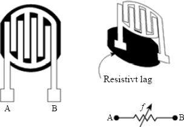
Figur 2.1: Resistive trykksensorer
Sensorene som brukes, er resistive trykksensorer (fig. 2.1), eller trykkfølsomme motstander. De består av av to deler: polymerbasert tykkfilm koblet til et resistivt materiale, og polymerbasert tykkfilm koblet til elektroniske kontakter. Polymer er en type bindingsmiddel som brukes på motstander og ledere. Når dette presses sammen, gir det økt konduktivitans (lederevne) gjennom kretsen [Vedlegg 2].
Dermed fungerer sensorene som en variabel motstand under trykk (jo høyere trykk, jo lavere resistans), og som et brudd (uendelig resistans) ellers.
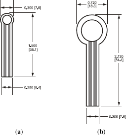
Figur 2.2: Sensor type FSR-400 (a), sensor type FSR-402 (b). Millimetermål er gitt i klammer.
Sensorene, som produseres av Interlink Electronics,[1] kommer i to typer (fig. 2.2): (a) en liten sensor med en diameter på 8 mm (FSR-400), og (b) en stor sensor på 18 mm (FSR-402). Det trykkfølsomme området er litt mindre og er på hhv. 5 mm og 14 mm.
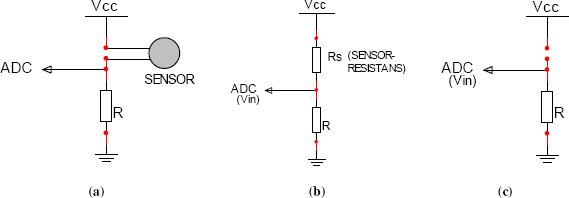
Figur 2.3: Forspenning av trykksensor (a), spenningsdeling (b) og brudd (c)
For å få målbare trykkverdier, må sensorene forspennes (fig. 2.3a). Hver sensor kobles i serie med en motstand \(R\), som går til jord. I den andre enden påtrykkes en tilførselsspenning \(V_{CC}\) på 3,3 V. Dette oppsettet gir en spenningsdeling mellom sensorresistansen, \(R_S\), og \(R\):
\[\begin{equation}\label{eq:spenningsdeling} V_{IN} = V_{CC} \cdot \frac{R}{R_S + R} \end{equation}\]
\(V_{IN}\) sendes inn på analog-til-digital-omformeren på kortet (ADC-en), og er altså verdien som programmet på mikrokontrolleren «ser». Gjennom ADC-en får vi en overgang fra den fysiske størrelsen \(V_{IN}\) til den digitale 8-bit verdien ADC_VARIABEL i programkoden:
\[\begin{equation}\label{eq:datablad} \text{ADC_VARIABEL} = \frac{V_{IN} \cdot 255}{V_{REF}} \end{equation}\]
\(V_{REF}\) er referansespenningen og er lik \(V_{CC}\). Den maksimale verdien for ADC_VARIABEL, 255, svarer dermed til 3,3 V, og ADC_VARIABEL er proporsjonal med \(V_{IN}\).
For å velge en passende verdi for forspenningsmotstanden \(R\), må vi se hvordan den påvirker forholdet mellom trykk og spenning. Dette forholdet kan brytes opp i to mindre: forholdet mellom trykk (\(\rho\)) og sensorresistans (\(R_S\)), og forholdet mellom sensorresistans (\(R_S\)) og målt spenning (\(V_{IN}\)).
Målinger på \(\rho\)–\(R_S\)-forholdet er gitt i avsnitt 2.2, og kan i korte trekk oppsummeres slik: for lette trykk er \(R_S \approx 100\) kΩ, og for harde trykk går \(R_S\) ned til 20 kΩ, med sterkt avtagende stigning (fig. 2.10). Forholdet er altså sterkt ulineært: \(R_S\) er stor når \(\rho\) er liten, og \(R_S\) er liten når \(\rho\) er stor.
Det samme gjelder for \(R_S\)–\(V_{IN}\)-forholdet, gitt i ligning \(\eqref{eq:spenningsdeling}\): når den ene går opp, går den andre ned. Summen av disse to «inverse» forholdene er at \(\rho\) og \(V_{IN}\) øker i takt: når trykket øker, så øker den målte spenningen, og når trykket minker, så minker spenningen. Når \(\rho = 0\), så er også \(V_{IN} = 0\), og i programkoden har ADC_VARIABEL verdien 0. Dette er det ideelle nullnivået, verdien når sensoren ikke er i bruk.
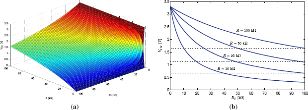
Figur 2.4: \(V_{IN}\) som funksjon av \(R\) og \(R_S\), ligning \(\eqref{eq:spenningsdeling}\)
Hvis 0 V er spenningen som måles for intet trykk, hva er da spenningen for et lett trykk (når \(R_S = 100\) kΩ)? Det er viktig at denne verdien ikke er for lav, ellers vil den ikke reliabelt kunne skilles fra nullnivået: \(V_{IN\text{min}} > 0\) V. Figur 2.4 viser hvordan forspenningsmotstanden \(R\) innvirker på forholdet mellom \(R_S\) og \(V_{IN}\). Når sensoren tas i bruk, vil vi få et sprang på minst minimumsverdien, \(V_{IN\text{min}}\), som selvfølgelig ikke bør være så lav at spranget ikke registreres. Men den bør heller ikke være for høy, ellers får vi ikke utnyttet intervallet av \(V_{IN}\)-verdier (verdiområdet) skikkelig.
Vi ser også at sammenhengen mellom \(R_S\) og \(V_{IN}\) blir mer ulineær for lavere verdier av \(R\). Ulinearitet er ikke nødvendigvis negativt. Si at vi ønsker at pekerfarten skal være konstant for lette trykk (\(R_S = \text{40–100}\) kΩ), men at den skal øke for harde trykk (\(R_S < 40\) kΩ). Da er det gunstig med lav oppløsning for «lette trykk» og høy oppløsning for «harde trykk». Det vil si at vi bruker en større del av intervallet av \(V_{IN}\)-verdier til å differensiere mellom de «harde trykkene», mens de «lette trykkene» delegeres til et snevrere utsnitt.
Veier vi disse hensynene opp mot hverandre, ser vi at en motstand på 8–15 kΩ kan være egnet. Dette gir \(V_{IN\text{min}} = \text{0,24–0,43}\) V, som svarer til ADC_VARIABEL = 19–33: godt over det ideelle nullnivået, og god utnyttelse av verdiområdet.
Men hvordan fungerer sensorene i praksis? Endres sensorresistansen over tid? Er nullnivået alltid 0 V? For å få svar på disse spørsmålene, må vi foreta noen målinger.
2.2 Målinger
For å fastslå hvordan sensorene oppfører seg under ulike omstendigheter, er det foretatt tre forskjellige typer målinger på sensorene. Denne informasjonen er nødvendig for å avgjøre sensorenes muligheter og begrensninger. Utstyret som er benyttet for disse målingene er gitt i tabell 2.1.
Tabell 2.1: Utstyrsliste
Instrument/maskin Type/data Motstand 8,2 kΩ Spenningsforsyning 4,5 V Vektenhet 4,35 g (kronestykke) Vektarm 18 g Multimeter
For å øve et konstant trykk på sensorene, er det brukt en arm som det blir lagt vektenheter på, figur 2.6. Hvor på sensorens overflate trykket settes, innvirker på motstandsverdien, men armen sørger for å holde kontaktflaten og trykkområdet tilnærmet konstant, figur 2.7. Uten vektenheter veier armen 18 g.
2.2.1 Motstandsverdi ved varierende trykk FSR-400
Motstandsverdien til \(R_S\) (i kΩ) måles som direkte følge av trykk på overflaten til en sensor av typen FSR-400 (liten sensor). Målingene foretas med 5 s mellomrom. Hensikten med denne målingen er å se hvordan et konstant trykk påvirker \(R_S\) over tid og hva som skjer når trykket minker. Går \(R_S\)-verdien tilbake til utgangspunktet, eller er den endret som følge av at sensoren har vært i bruk? Dette er et viktig spørsmål hva nullnivået angår.
Måleresultatene er gitt i tabell 2.2 og figur 2.5.
2.2.1.1 Drøfting av resultatene
Som man kan se av tabell 2.2 er resistansen i sensoren ved 26,7 g (tilstand 0) lik uendelig – sensoren leder ikke. Når trykket så øker til 31,05 g (tilstand 1), leder sensoren. Deretter lar man sensoren være i tilstand 1 i 20 s, og observerer at resistansen minker, se figur 2.5. Men når man nå går tilbake til tilstand 0, kan man se at sensoren fortsatt leder.
Sensorresistansen har altså en slags hysteresefunksjon. Over tid vil denne hysteresen øke noe. Dette må det tas høyde for når sensorene skal avleses: Man kan ikke sammenligne de avleste verdiene med et fastsatt nullnivå på 0 V, men må i stedet sørge for å kalibrere nullnivået med jevne mellomrom.
Tabell 2.2: Liten sensor, varierende vekt
Vektenheter [stk.] Tillegg til arm [g] Total vekt [g] \(R_S\) [kΩ] 0 0,00 18,00 – 2 8,70 26,70 – 3 13,05 31,05 111 3 13,05 31,05 97 3 13,05 31,05 93 3 13,05 31,05 70 2 8,70 26,70 120 3 13,05 31,05 74 2 8,70 26,70 108 3 13,05 31,05 71 3 13,05 31,05 69 3 13,05 31,05 66 2 8,70 26,70 87
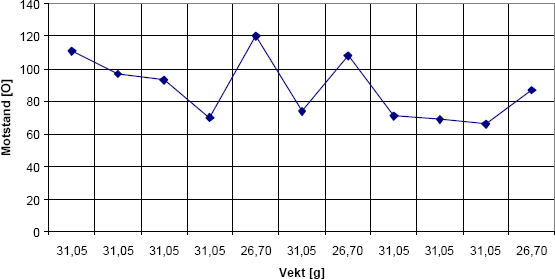
Figur 2.5: Liten sensor, varierende vekt (tabell 2.2)
2.2.2 Spenningsverdi ved økende trykk, vektene av mellom hver måling
Sensorene blir koblet opp som i figur 2.3 og spenningen over \(R\) blir målt ved trykk på sensoren. Mellom hver måling tas vektene av, og trykket blir 18 g.[2] Målingene foretas 5 s etter at vekten er lagt på. Spenningen som måles er spenningen ADC-en på kortet ser, så hensikten er å måle hvordan spenningen stiger ved enkelttrykk.
For målingene gjelder ligning \(\eqref{eq:spenningsdeling}\), samt sammenhengene
\[\begin{aligned} R_S &= \frac{V_{CC} - V_R}{I_R}\label{eq:resistans}\ I_R &= \frac{U_R}{R}\label{eq:strom}\end{aligned}\]
Målingene er foretatt med \(V_{CC} = 4,5\) V og \(R = 8,2\) kΩ. Valget av verdier er basert på utstyret som var tilgjengelig da målingene ble foretatt.
Resultatene for liten sensor (FSR-400) er gitt i tabell 2.3 og figur 2.8, og resultatene for stor sensor (FSR-402) er gitt i tabell 2.4 og figur 2.9.
2.2.2.1 Drøfting av resultatene
Av figur 2.8 og 2.11, som viser spenning og motstand mot trykk for hhv. liten og stor sensor, kan man se at de to typene gir ganske like resultater. Den store sensoren har en noe brattere kurve. Dette kan komme av den større overflaten, og at buen på overflatemembranen minker resistansen over et større område enn det som faktisk er i kontakt med armen, illustrert i figur 2.7.
Det kommer frem av resultatene i figur 2.8a og figur 2.9a at spenningens stigningsendring er ganske jevnt fordelt over trykkområdet. Det er derimot ikke den fallende endringen til sensorverdien som man kan se i figur 2.8b og figur 2.9b. Dette skyldes den ulineære sammenhengen i ligning \(\eqref{eq:spenningsdeling}\).
Spenningsstigningen har noen ujevnheter, dette kan være fordi kontaktpunktet har en unøyaktighet på \(\pm 1\) mm når vektene tas av.
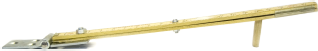
Figur 2.6: Arm for å legge vekt(er) på sensorene
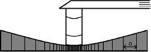
Figur 2.7: Sensor under trykk
Tabell 2.3: Liten sensor, økende vekt, vektene av mellom hver måling
\(V_R\) [V] Vekt [g] Vektenheter [stk.] Utr. \(I_R\) [µA] Utr. \(R_S\) [kΩ] 0,20 18,00 0 24,39 176,30 0,38 22,35 1 46,34 88,91 0,72 26,70 2 87,80 43,05 1,02 31,05 3 124,39 27,98 1,13 35,40 4 137,80 24,45 1,28 39,75 5 156,10 20,63 1,29 44,10 6 157,32 20,40 1,56 48,45 7 190,24 15,45 1,60 52,80 8 195,12 14,86 1,70 57,15 9 207,32 13,51 1,67 61,50 10 203,66 13,90 1,75 65,85 11 213,41 12,89 1,90 70,20 12 231,71 11,22 1,96 74,55 13 239,02 10,63 2,01 78,90 14 245,12 10,16 2,07 83,25 15 252,44 9,63 2,12 87,60 16 258,54 9,21 2,18 91,95 17 265,85 8,73 2,20 96,30 18 268,29 8,57
Tabell 2.4: Stor sensor, økende vekt, vektene av mellom hver måling
\(V_R\) [V] Vekt [g] Vektenheter [stk.] Utr. \(I_R\) [µA] Utr. \(R_S\) [kΩ] 0,27 18,00 0 32,93 128,47 0,63 22,35 1 76,83 50,37 0,96 26,70 2 117,07 30,24 1,25 31,05 3 152,44 21,32 1,35 35,40 4 164,63 19,13 1,54 39,75 5 187,80 15,76 1,65 44,10 6 201,22 14,16 1,65 48,45 7 201,22 14,16 1,67 52,80 8 203,66 13,90 1,80 57,15 9 219,51 12,30 1,90 61,50 10 231,71 11,22 1,94 65,85 11 236,59 10,82 2,08 70,20 12 253,66 9,54

(a) Spenning mot trykk
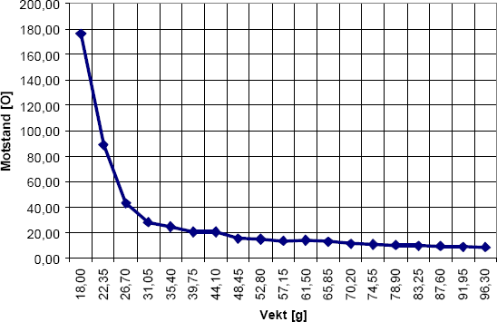
(b) Motstand mot trykk, utregnet fra (a)
Figur 2.8: Liten sensor, økende vekt, vektene av mellom hver måling (tabell 2.3)
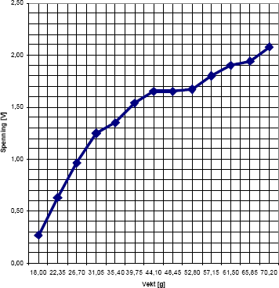
(a) Spenning mot trykk
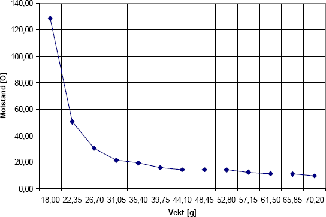
(b) Motstand mot trykk, utregnet fra (a)
Figur 2.9: Stor sensor, økende vekt, vektene av mellom hver måling (tabell 2.4)
2.2.3 Spenningsverdi ved økende trykk, vektene ikke av
Som tidligere i avsnitt 2.2.2 måles spenningen over \(R\), men vektene blir nå ikke tatt av mellom hver måling. Dette er for å minske muligheten for bevegelse på armen, og for å vise forventet spenning/spenningsendring i tilfelle konstant trykk på sensoren. Her venter man 15 s mellom målingene for å la verdien bli tilnærmet stabil før vekten økes.
Resultatene for liten sensor er gitt i tabell 2.5 og figur 2.10, og resultatene for stor sensor er gitt i tabell 2.6 og figur 2.11.
2.2.3.1 Drøfting av resultatene
Ved å sammenligne figurene 2.8 og 2.10 (for liten sensor) og 2.9 og 2.11 (for stor sensor), kan man se at de er ganske like. Den første avlesningen gir imidlertid en mye høyere spenning enn tidligere: Det er nå en differanse på ca. 0,25–0,50 V. Denne differansen synker til ca. 0,00–0,15 V ved 70,20 g. Følgen er en lavere stigning enn for enkelttrykkene.
Dette understreker viktigheten av kontinuerlig kalibrering av nullnivået. Det de avleste sensorverdiene blir sammenlignet med for å fastslå om de er i bruk, kan ikke være en konstant – ellers vil man kunne få hendelsesaktivering som følge av at hodebøylen presser mot kinnet. Sensorene setter krav til en dynamisk verdi for hendelsesaktivering.
Tabell 2.5: Liten sensor, økende vekt, vektene ikke av mellom målingene
\(V_R\) [V] Vekt [g] Vektenheter [stk.] Utr. \(I_R\) [µA] Utr. \(R_S\) [kΩ] 0,66 18,00 0 80,49 47,71 0,79 22,35 1 96,34 38,51 0,94 26,70 2 114,63 31,06 1,14 31,05 3 139,02 24,17 1,30 35,40 4 158,54 20,18 1,50 39,75 5 182,93 16,40 1,62 44,10 6 197,56 14,58 1,71 48,45 7 208,54 13,38 1,79 52,80 8 218,29 12,41 1,89 57,15 9 230,49 11,32 1,96 61,50 10 239,02 10,63 2,03 65,85 11 247,56 9,98 2,07 70,20 12 252,44 9,63 2,10 74,55 13 256,10 9,37 2,14 78,90 14 260,98 9,04 2,17 83,25 15 264,63 8,80 2,20 87,60 16 268,29 8,57 2,23 91,95 17 271,95 8,35 2,25 96,30 18 274,39 8,20
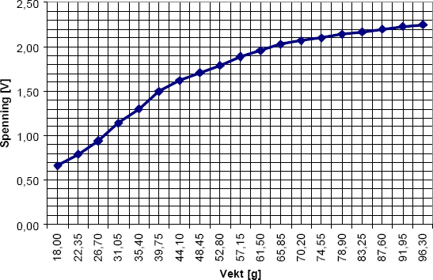
(a) Spenning mot trykk
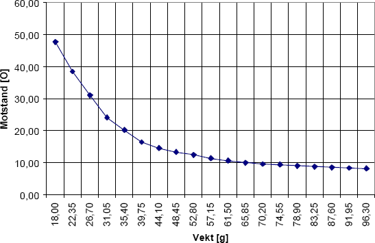
(b) Motstand mot trykk, utregnet fra (a)
Figur 2.10: Liten sensor, økende vekt, vektene ikke av mellom målingene (tabell 2.5)
Tabell 2.6: Stor sensor, økende vekt, vektene ikke av mellom målingene
\(V_R\) [V] Vekt [g] Vektenheter [stk.] Utr. \(I_R\) [µA] Utr. \(R_S\) [kΩ] 0,48 18,00 0 58,54 68,68 0,73 22,35 1 89,02 42,35 1,10 26,70 2 134,15 25,35 1,28 31,05 3 156,10 20,63 1,42 35,40 4 173,17 17,79 1,50 39,75 5 182,93 16,40 1,63 44,10 6 198,78 14,44 1,71 48,45 7 208,54 13,38 1,80 52,80 8 219,51 12,30 1,89 57,15 9 230,49 11,32 1,97 61,50 10 240,24 10,53 2,08 65,85 11 253,66 9,54 2,15 70,20 12 262,20 8,96 2,22 74,55 13 270,73 8,42 2,27 78,90 14 276,83 8,06 2,32 83,25 15 282,93 7,71 2,35 87,60 16 286,59 7,50 2,39 91,95 17 291,46 7,24 2,42 96,30 18 295,12 7,05
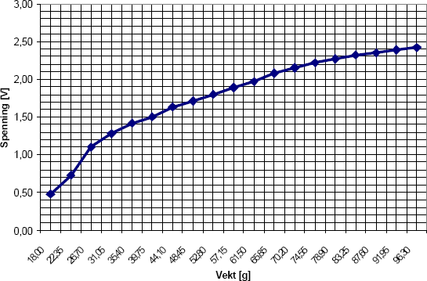
(a) Spenning mot trykk
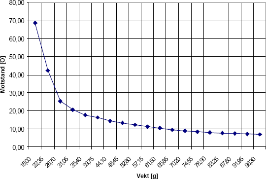
(b) Motstand mot trykk, utregnet fra (a)
Figur 2.11: Stor sensor, økende vekt, vektene ikke av mellom målingene (tabell 2.6)
3 Hodebøyle
Inneholder en oversikt over hvordan gruppen gikk frem og laget en prototype helt fra bunn. Den skal holde sensorene inntil kinnet og sende informasjon videre til kretskortet som behandler dataene. Prototypen som ble laget, oppfyller til en viss grad alle kravene satt i produktspesifikasjonen, men sensorene ligger litt dårlig mot kinnet og justeringsdelen er litt hard.
3.1 Problemstilling
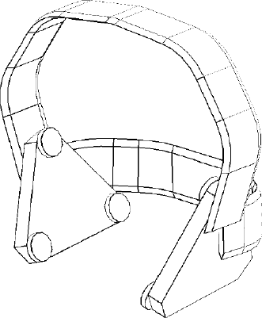
Figur 3.1: Skisse av prototype, laget i AutoCAD
For å benytte sensorene som tenkt, blir prosjektgruppen nødt til å konstruere noe som holder sensorene på plass på utsiden av hvert kinn. Siden ingen av gruppedeltagerne har noe erfaring fra lignende prosjekter før, og det skal være en prototype, blir design nedprioritert. Prototypen skal være behagelig å bruke, må kunne brukes av flere brukere og være uproblematisk å ta av og på (se produktspesifikasjonen).
3.2 Gjennomføring
Første tanke var å ta en allerede utviklet hodebøyle og sette på sensorene. Problemet var at ingen hodebøyler til en rimelig pris var mulig å ha helt ned til kinnet fra over hodet. Vi ble derfor nødt til å lage det hele fra bunn av.
Ettersom utseendet ikke var så relevant, ble det i første omgang brukt spikerbånd, som er ganske bøyelig og enkelt å arbeide med. Det ble satt sammen med en skrue og en mutter på hver side av hodet. Det ene båndet gikk over hodet, det andre bak (fig. 3.2a). Dette fungerte, men det var uten muligheter til å justere og oppfylte derfor ikke alle kravene i produktspesifikasjonen.
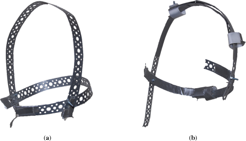
Figur 3.2: Første (a) og andre (b) utkast av prototype for hodebøylen
Inspirasjon til videreutvikling ble hentet fra en Koss PortaPro-hodebøyle, og det ble funnet en måte å justere hodebøylen på (fig. 3.2b). Kravet om å lage en justerbar prototype som kunne tilpasses hver enkelt bruker, ble dermed oppfylt. Noe som først ble ansett som en fordel for å holde hodebøylen godt på plass, viste seg etter hvert å være en ulempe, for med ett bånd som gikk over hodet, og ett som gikk bak hodet, ble det veldig problematiskt å ta hodebøylen på og av hodet. Det ble altså nok en gang en konflikt mellom kravene i produktspesifikasjonen og resultatet.
Etter flere forsøk med spikerbånd, ble det konkludert med at det ikke var det best egnet metallet, siden det var svakt og knakk ofte ved mye bøying. Det ble derfor behov for noe annet. Alternativet ble metallet som blir brukt for å rense kloakkrør. Fordelen med dette metallet er at det er veldig solid og meget slitesterkt, og hvis en bøyer det i forkant, er det veldig stivt. Derfor er det mulighet til å få det veldig stramt imellom kinn og sensor.
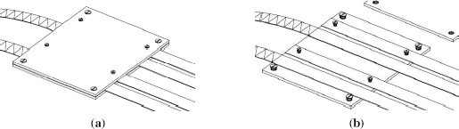
Figur 3.3: Justeringsboks med lokk (a) og uten lokk (b)
Med det nye «vidundermetallet» kunne det lages en helt ny måte å justere hodebøylen på ut ifra inspirasjonen fra Koss PortaPro. Dette er illustrert i figur 3.3 og 3.4. Hodebøylen ble laget med tre bånd på hver side og koblet sammen med noen justeringsbokser på toppen av hodet. Det nye justeringssystemet fungerte mye bedre enn det vi hadde fra før. Hodebøylen var justerbart til flere brukere; å sette det av og på var uproblematisk, og det var behagelig å ha på seg. Men kravet om at det skulle legges press på sensorene mot kinnet, var fortsatt ikke oppfylt.
Siden det hadde blitt bestemt at det ikke skulle være noe bak hodet for å stramme opp, pga. praktiske årsaker, kom vi frem til at det måtte legges et tykkere lag med metall litt lengre frem, som ble festet til det punktet som sensorene på hodebøylen skulle festes. Ved hjelp av dette oppfyltes alle kravene som hadde blitt satt. Det eneste som manglet nå var å plassere sensorene og få det hele koblet til kretskortet med mikroprosessoren. (Mer om sensorkonfigurasjon i kapittel 6.)
Det å få festet sensorene på hodebøylen ble gjort veldig enkelt: Først ble det brukt to metallplater, en på hver side. Deretter ble de små kretskortene som sensorene er koblet sammen på, festet på metallplatene.
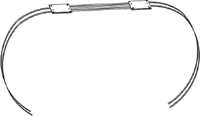
Figur 3.4: Tegning av hodebøylens justeringsmuligheter
Det som nå ble vurdert, var om kretskortet som inneholder mikroprosessoren, skulle plasseres på hodebøylen. Siden det i utgangspunktet skulle være minst mulig på hodebøylen – både fordi at det skulle være så lett som mulig, og at det ikke skulle bli mye elektronikk som en må ta hensyn til når en skal plassere hodebøylen på brukeren – måtte det finnes et annet alternativ. Det ble anskaffet en større kabel med flere ledere i som ble festet på toppen av hodebøylen og koblet til sensorene på hver sin side, slik at alle signalene fra sensorene blir sendt samlet gjennom en kabel til prosessoren som skal ta imot. På enden av kabelen ble det montert et motstykke til en COM-port, dette for å gjøre det enkelt å koble hodebøylen til «X-box»-en i kapittel 4 (fig. 3.5).
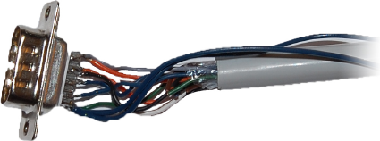
Figur 3.5: Bilde av signalkabel
3.3 Resultat
En prototype av en hodebøyle som oppfylte de kravene som hadde blitt satt i forkant (figur 3.6). Det passer til flere brukere ved hjelp av justeringsmulighetene, og det er lett å koble opp og komme igang med. Det er to ulemper med den ferdige prototypen. Den ene er at justeringsdelen er litt hard. Den andre er at hodebøylen ikke har nok press mot kinnet hvor sensorene ligger. (Begge disse problemene vil være enkelt å løse på en ev. ferdig versjon ved hjelp av noen som har en bedre bakgrunn i mekanikk og ev. annet utstyr som gruppen ikke hadde til rådighet.)
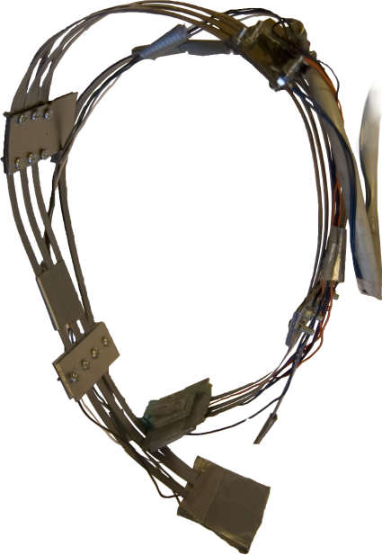
Figur 3.6: Ferdig prototype
4 X-box
Inneholder en kort beskrivelse av hvordan «X-box»-en ble laget og hva den brukes til. Bakgrunnen til at «X-box»-en ble laget er gitt i kapittel 3. «X-box»-en skal inneholde elektronikken som behandler dataen fra hodebøylen, og sender den videre til PC-en.
4.1 Problemstilling
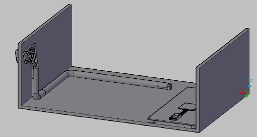
Figur 4.1: Skisse av «X-box», laget i AutoCAD
Det var et behov for et mellomledd mellom selve musen (hodebøylen, kap. 3) og datamaskinen. Dette bindingspunktet måtte enkelt kunne kobles til hodebøylen via COM-port og samtidig kunne kobles videre via USB til PC-en. Det måtte inneholde kretskortet til mikroprosessoren.
4.2 Gjennomføring
Prosjektgruppen fant ut at det skulle lages en boks som skulle ha to kontakter: En COM-port som skulle kobles til hodebøylen, den andre kontakten skulle være USB for å kommunisere videre inn til datamaskinen. Inne i boksen skulle det også være plass til kretskortet, samt til å sette på testutstyr for å resette/justere koden underveis. Det ble brukt en metalplate som bøydes 90° på hver side. Dette utgjorde underlaget til boksen og 2 «vegger». Kretskortet ble festet inne i boksen ved hjelp av gaffateip, og plasseringen av kortet var så nær den ene kanten uten «vegg» slik at den lett kan kobles til USB-kabelen (som en kan se på fig. 4.2). Siden det skulle være COM-kontakt mot hodebøylen, ble det laget et hull i den ene siden hvor COM-porten ble satt inn. Det ble strukket ledninger som på den ene siden var loddet fast til kretskortet, den andre enden til COM-porten. Nå var det altså bare å koble i headsettet på den ene siden, og maskinen med USB på den andre. «That’s Plug ‘n’ Play!»
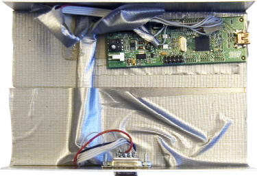
Figur 4.2: Bilde av «X-box» fra toppen
4.3 Resultat
En boks som skal være et bindeledd mellom PC-en og musen (figur 4.3). Den har en COM-port som var gruppens løsning for å på en enkel måte koble til hodebøylen. Videre går data fra hodebøylen inn til kretskortet, og videre til maskinen som utfører ønskede operasjoner.
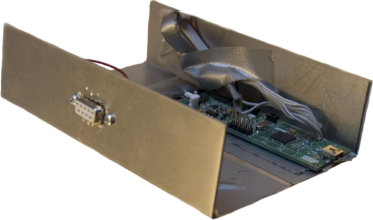
Figur 4.3: Bilde av ferdig «X-box»
5 Elektronikk
Dette kapittelet tar for seg valg av krets for tolking og digitalisering av sensordata og begrunnelse for valget. Det omhandler også litt om den innebygde spenningsregulatoren som bruker strøm fra USB eller batteri. Kapittelet avrundes med en begrunnelse for valg av PC-grensesnitt. AT90USBkey har de funksjonene vi lette etter. Den kommuniserer og får strøm via USB-porten, og har en innebygd spenningsregulator som blir brukt til forspenning av de trykkfølsome motstandene.
5.1 Problemstilling
Det skal lages en krets for kommunikasjon med PC og Microsoft Windows. Prosjektgruppen fokuserer på de to grensesnittene Bluetooth og USB. Bluetooth er et trådløst grensesnitt som de fleste moderne PC-er enten allerede har mottager for eller mulighet for å installere. USB er det mest brukte grensesnittet mot PC i dag. Det er også standard grensesnitt for PC-mus.
Det skal tas stilling til hvor behandlingen av data skal foregå. Skal data behandles i et bakgrunnsprogram på Microsoft Windows, eller skal all prosessering av data foregå før oversending til PC?
Kretsen skal ikke sette krav til brukerens tekniske kunnskaper. Kretsen må kunne lese analoge data og digitalisere den å sende den videre (analog-til-digital-omformer, ADC). Den skal også være den billigste mulige løsningen som kan tilfredsstille alle spesifikasjonene.
5.2 Valg av krets
Prosjektgruppen velger å bruke AT90USBKey, som er en demokrets fra Atmel [Vedlegg 3].[3] Kretsen inneholder mikrokontrolleren AT90USB1287 [Vedlegg 4].
Denne kretsen ble valgt på grunnlag av at den inneholder USB-brukergrensesnitt mot PC, og er tidsbesparende siden prosjektgruppen slipper å designe en egen krets. Mikrokontrolleren har en krystall på 8 MHz og 128 kB minne. Den har også en åtte-ports ADC.
Siden kretsen er ment som en demonstrasjonskrets, bruker den to av ADC-portene til temperaturavlesning (PF0 og PF3). Dette er ikke et problem for prototypen, som bare bruker seks ADC-porter. Men ønsker man å bruke portene PF0 og PF3, kan kretsen endres ved å fysisk fjerne tilkoblingen til temperaturavlesningen.
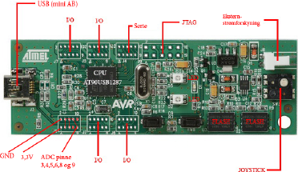
Figur 5.1: AT90USBKey
Atmel har laget et USB Human Interface Device (HID)-kompatibelt musegrensesnitt for mikrokontrolleren.[4] Ved å bruke dette sparer prosjektgruppen ytterligere med arbeidstid, men dette betyr at avlest data må behandles av mikrokontrolleren før den sendes til PC (for databehandling, se kapittel 6).
Alternativet til denne kretsen var å designe en egen krets med Bluetooth/USB-grensesnitt mot PC for bruker, og et programmeringsgrensesnitt for utvikling. Denne kretsen ville også blitt bygd rundt en mikrokontroller fra Atmel, grunnet faglig kompetanse hos HiST. Mer om hva som kan gjøres videre er gitt i kapittel 10 – design av kretsen(e) er utenfor prosjektgruppens hovedproblemstilling.
5.3 Strømforsyning
Den innebygde spenningskretsen på AT90USBKey gjør det mulig å bruke strøm direkte fra USB-porten eller fra et eksternt batteri (se kapittel 10 for bruk av batteri). I vårt tilfelle bruker vi 5 V spenningen fra USB-kontakten for å forsyne kretsen. Se figur 5.2 for skjemategning over strømforsyningen fra USB. Fordelene med dette er at kretsen blir billigere og mindre komplisert. Spenningen blir gjort om til ca. 3,3 V ved hjelp av en lineær CMOS-spenningsregulator. Den nøyaktige utspenningen fra denne kan beregnes fra formelen
\[V_{CC3} = 1,25 \cdot \left(1 + \frac{R_{15}+R_{18}}{R_{19}}\right)\]
Dette gir en utspenning på \(V_{CC3} = 3,266\) V. Denne spenningen blir også benyttet av sensorene som er koblet til.
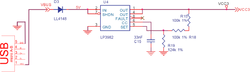
Figur 5.2: AT90USBKey-powerkrets
USB-grensesnitt
USB-teknologien har mange fordeler fremfor f.eks. PS2, RS232, LPT1 mfl. Siden USB er det mest brukte PC-grensesnittet i dag, er alle nye datamaskiner og maskiner fra tilbake til begynnelsen av 2000-tallet utrustet og klargjort for dette. Enheter kan bli koblet til og fra uten å måtte restarte systemet. Drivere blir automatisk lastet inn og enheten blir dermed gjenkjent og gjort klar til bruk («Plug ‘n’ Play»). En USB-inngang kan tilkobles så mange som 127 enheter og kan levere totalt opp til en halv ampere strøm til periferiutstyr.[5]
6 Funksjonalitet
Sensorene plasseres utenpå kinnene, to store knappsensorer og fire små bevegelsessensorer. Avlesningen av sensorverdiene er selvkalibrerende, og kan også kalibreres manuelt. I utgangspunktet måtte man presse kontinuerlig på bevegelsessensorene for å flytte pekeren, men dette gjorde tungemuskelen fort sliten. På bakgrunn av dette er sensorplasseringen justert lengst mulig frem på kinnet, og «ett-trykk-funksjonalitet» gjør det mulig å styre pekeren med lette trykk. Scroll og mulighet for å «dra» pekeren realiseres gjennom moduser, som aktiveres og deaktiveres ved å presse på knappsensorene.
6.1 Problemstilling
Plug ‘n’ Play USB-musegrensesnittet mot PC, valgt i kapittel 5, begrenser funksjonaliteten til standard musefunksjoner: horisontal, vertikal og diagonal bevegelse, venstre- og høyre museknapp, og scroll.[6] Den videre problemstillingen er hvordan disse funksjonene skal aktiveres ved å bruke sensorene.
Den fysiske plasseringen av sensorene må være enkel og intuitiv. Implementeringen av musefunksjonene må gjøres på bakgrunn av antall sensorer og plassering.
Det må også tas stilling til hvordan hver enkelt sensor avleses. Avleste verdier må nødvendigvis sammenlignes med et nullnivå for å avgjøre om de er i bruk. Målingene i kapittel 2 tilsier at dette nullnivået bør oppdateres med jevne mellomrom – mikrokontrolleren bør ta høyde for at sensorene kan henge seg opp, og kalibrere deretter.
6.2 Plassering av sensorene
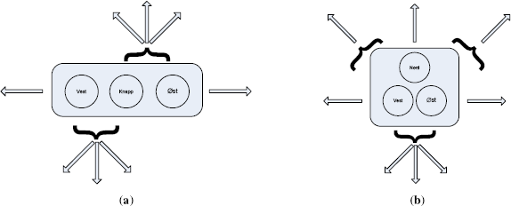
Figur 6.1: Sensorplate med tre bevegelsessensorer i linje (a) og trekant (b)
For at tungen skal kunne ha noen innvirkning på sensorene uten å være i direkte kontakt, må sensorene festes utenpå kinnet. Dermed unngår man også spørsmål rundt hygiene ved brukerbytte.
Sensorene kan festes på kinnet på flere måter. Det er valgt å bruke en hodebøyle (se kap. 3) med plater som sensorene festes på.[7] Platene må ha riktig antall sensorer, som igjen må ha riktig plassering mellom hverandre for å gi en god brukerfølelse. For å gjøre det intuitivt, er knapp- og bevegelsessensorene plassert på hvert sitt kinn.
De fire hovedretningene regner vi som oppover, nedover, til venstre og til høyre. Dersom diagonal bevegelse (kombinasjoner av hovedretningene) også er et krav, må det plasseres minst tre sensorer på «bevegelseskinnet».[8] Disse må kunne aktiveres samtidig, og det må tas hensyn til hvilken sensor som er mest aktiv.
Som vi ser av figur 6.1, krever minst én av hovedretningene at man trykker på to av de tre sensorene samtidig. Dette blir veldig vanskelig å skille fra diagonal bevegelse, og derfor forkaster vi disse konfigurasjonene. Hovedretningene er viktigere enn diagonalretningene. Ved å bruke fire sensorer for bevegelse, får hver hovedretning sin egen sensor, og diagonal bevegelse fås ved å aktivere to sensorer samtidig. Det er dette oppsettet vi bruker i vår første tilnærming.
6.3 Første tilnærming
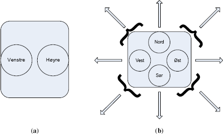
Figur 6.2: Første tilnærming: knapper på venstre kinn (a) og bevegelse på høyre kinn (b)
Den første tilnærmingen anvender fire små sensorer (type FSR-400) for bevegelse på venstre kinn og to store sensorer (type FSR-402) for knapper på høyre kinn (fig. 6.2). Bevegelsessensorene er plassert i «stjerne» og svarer til himmelretningene på et kompass – ved å presse på den øverste sensoren, går pekeren oppover, osv. Når trykket forsvinner, slutter bevegelsen.
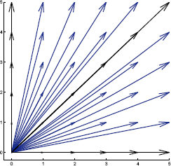
Figur 6.3: Retninger i intervallet 0–90°. Tallene på aksene ganges med basishastigheten.
Diagonal bevegelse fås ved å trykke på to nærliggende sensorer samtidig. Dersom man presser ekstra hardt, beveger pekeren seg opptil fem ganger raskere. Dette gir teoretisk 72 flere retninger dersom man øver ulikt trykk på to nærliggende sensorer (fig. 6.3), dvs. en gjennomsnittlig oppløsning på 4,5°. (I praksis er bare de fire første hastighetene oppnåelige, noe som gir 40 ekstra retninger og 7,5° gjennomsnittlig oppløsning.)
Knappsensorene er plassert side om side og svarer til henholdsvis venstre og høyre museknapp. Et enkelt trykk gir et enkelt klikk. For å dobbeltklikke, kan man presse kontinuerlig slik at to klikk produseres i rask rekkefølge.
Hvis en sensor kommer under uønsket press, kan brukeren rekalibrere den ved å trykke på motsatt kinn. Da tas den gjeldende sensorverdien som nullnivå, og fremtidige sensorverdier sammenlignes med denne. Ellers kalibreres sensorene automatisk når de ikke er i bruk.
Manglende funksjoner er scroll og å «dra» musepekeren, dvs. holde venstre museknapp inne mens pekeren beveges.
Avlesning av én sensor
Hver sensor er forspent og koblet til en egen analog-til-digital-omformer (ADC) som beskrevet i kapittel 2. ADC-ene avleses kontinuerlig – opptil 125 ganger i sekundet – og verdiene analyseres for å fastslå om en sensor er i bruk.
For å finne ut om en sensor er aktiv, må den avleste verdien sammenlignes med en verdi for når sensoren ikke er i bruk, nullnivået. Hvis den avleste verdien er større enn nullnivået med en viss margin – spranget – er sensoren aktiv:
\[\begin{equation}\label{eq:sprang} \text{avlest verdi} > \text{nullnivå} + \text{sprang} \end{equation}\]
Når dette er oppfylt, sier vi at vi «har et sprang». Marginen er fastsatt på forhånd, og er litt større for de store sensorene på knappkinnet enn de små sensorene på bevegelseskinnet.
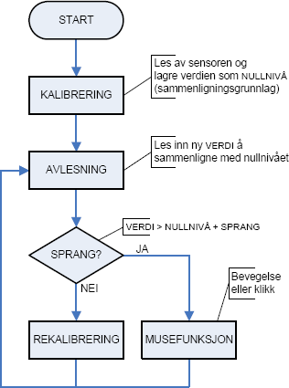
Figur 6.4: Selvkalibrering og avlesning av sensor
Ideelt sett er nullnivået 0 V. Men det er alltid en fare for at en av sensorene kommer i klem, og dermed gir en høyere verdi. Derfor bør ikke nullnivået fastsettes på forhånd, men i stedet kalibreres automatisk med utgangspunkt i de avleste verdiene.
Figur 6.4 viser avlesing og kalibrering av én enkelt sensor. Den første avlesningen av sensoren etablerer nullnivået, som videre avlesninger sammenlignes med. Deretter avleses sensoren kontinuerlig og sammenlignes med nullnivået. Hvis differansen er stor nok, betraktes sensoren som aktiv, og en musefunksjon utføres. Hvis differansen ikke er stor nok, derimot, blir nullnivået rekalibrert: nullnivået settes til den avleste verdien.
Rekalibreringen begrenset til hver 250. gjennomgang i programmet [Vedlegg 1], slik at bare 250 påfølgende avlesninger uten «sprang» gir rekalibrering. Dette medfører at dersom sensoren gradvis kommer under press (eller presset gradvis opphører), vil nullnivået oppdateres, mens hvis sensoren plutselig tas i bruk, vil en musefunksjon utføres.
Det kan tenkes at en sensor plutselig kommer under varig press selv om den ikke er i bruk, f.eks. ved å flytte på hodebøylen. I slike tilfeller kan det være nødvendig å kalibrere manuelt, noe som gjøres ved å aktivere en sensor på motsatt kinn. Hvis begge kinnene er «aktive», sett fra programmets synspunkt, settes nullnivået på nytt.
6.3.2 Avlesning av flere sensorer
Programmet lagrer de siste avleste verdiene til de seks sensorene i én tabell, og de seks nullnivåene, som disse sammenlignes med, i en annen. Det går så igjennom tabellene parvis og sjekker dem opp mot ligning (6.1) – på leting etter en aktiv sensor.
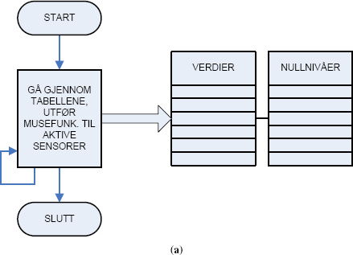
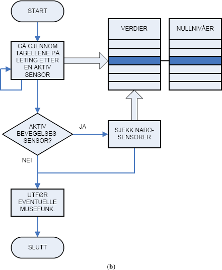
Figur 6.5: Avlesningsløkker: enkel (a) og avansert (b)
Når en aktiv sensor er funnet, er det to muligheter (fig. 6.5). Skal (a) resten av sensorene også undersøkes, eller (b) søket avsluttes og den aktive sensoren returneres? Hvis vi bare returnerer den første aktive sensoren, må vi legge inn en ekstra «nabosjekk» av nærliggende sensorer for å oppdage om to bevegelsessensor brukes samtidig (diagonal bevegelse).[9] Hvis vi søker gjennom hele tabellen, derimot, vil alle aktive sensorer gi musefunksjoner (noe som håndterer diagonal bevegelse automatisk), men kan gi uønskede eller ingen musebevegelse ved noen sensorkombinasjoner.
Fordelen med å gjøre det på den andre og mer «tungvinte» måten i figur 6.5b, hvor vi stanser søket når en aktiv sensor er funnet og sjekker om denne sensoren har en aktiv «nabosensor», er er at den er mer fleksibel. Det er lettere å «gardere» mot aktive sensorer på begge kinn, som er signalet for manuell rekalibrering. Dessuten kan funksjonen som returnerer den første aktive sensoren, lett skrives om til å returnere den mest aktive sensoren dersom det viser seg vesentlig å skille mellom flere sensortrykk.[10] I vår første tilnærming returneres bare den første aktive sensoren, men forholdene ligger til rette for en omskrivning.
For å produsere ett klikk av gangen, er det bygd inn en forsinkelse som overser aktive knappsensorer etter at de er funnet aktive første gang. Dette forhindrer hundrevis av klikk mens sensoren er i bruk. Forsinkelsen er innstilt slik at brukeren kan dobbeltklikke ved å presse kontinuerlig.
6.3.3 Drøfting
Tilnærmingen er utførlig testet i kapittel 7. De viktigste funnene er at tungemuskelen fort blir sliten av å kontinuerlig presse på sensorene, og at det er tyngre dess lengre bak på kinnet man kommer. Med venstre og høyre knappsensor plassert side om side, kommer venstre knappsensor langt bak på kinnet (fig. 6.2a). Det samme gjelder høyre bevegelsessensor, som er plassert i «stjerne» med de andre bevegelsessensorene (fig. 6.2b).
Det er også et problem at det ikke er mulig å «dra» musepekeren. Ettersom tungen ikke kan presse på begge kinnene samtidig, kan dette bare implementeres ved å aktivere en egen modus hvor museknappen holdes nede. Støtte for moduser vil også gjøre det mulig å implementere scroll.
I vår andre tilnærming roterer vi sensorplasseringen slik at den blir mer vertikal med hensyn til munnen, og vi skriver om programmet til å «huske» en oppgave over flere sensoravlesninger. Resultatet er mer omfattende, men også mer komfortabelt.
6.4 Andre tilnærming
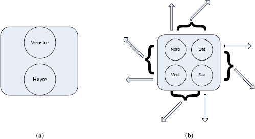
Figur 6.6: Andre tilnærming: knapper (a) og bevegelse (b).
I andre tilnærming plasserer vi bevegelsessensorene i «firkant» istedenfor «stjerne» for å få dem lengre frem på kinnet (fig. 6.6). Knappsensorene er plassert ovenfor hverandre istedenfor side om side.
Programmet tar nå utgangspunkt i den mest aktive sensoren, ikke bare den første.
Sensorenes funksjoner avhenger av hvilken modus programmet befinner seg i. I utgangspunktet befinner programmet seg i normalmodus, hvor knappsensorene produserer klikk og bevegelsessensorene styrer pekeren. Den viktigste forskjellen er måten pekeren styres på.
6.4.1 Normalmodus
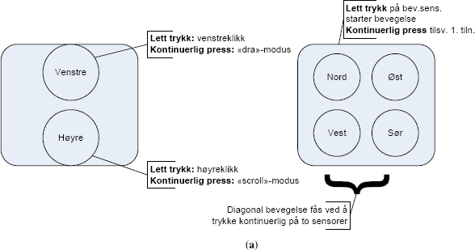
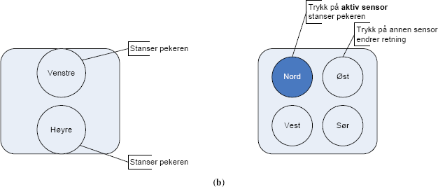
Figur 6.7: Normalmodus: klikk (a) og bevegelse (b)
Dette er programmets utgangspunkt (fig. 6.7). Hvis brukeren trykker lett på en knappsensor, produseres et klikk. Hvis brukeren trykker lett på en bevegelsessensor, beveger pekeren seg i sensorens retning, og fortsetter å bevege seg selv om brukeren ikke presser kontinuerlig. Pekeren styres med lette trykk istedenfor kontinuerlig pressing, noe som er mer behagelig for tungen.
Når pekeren beveger seg, kan brukeren skifte retning ved å trykke på en annen bevegelsessensor, og få bevegelsen til å opphøre ved å trykke på samme sensor en gang til. Pekeren beveger seg langsomt til å begynne med, for presisjonens skyld, og så raskere dersom brukeren ikke har skiftet retning etter et par sekunder. Dette gjør det lettere å bruke menyer og andre små områder på skjermen, uten at pekeren er like treg når den skal flyttes over større områder.
Det er mulig å bevege pekeren enda raskere ved å presse kontinuerlig på en bevegelsessensor istedenfor å bruke «ett-trykk-funksjonaliteten». Da vil pekeren bevege seg raskere dess hardere man presser, og slutte å bevege seg når trykket opphører, akkurat som i første tilnærming. Dette er praktisk for å bevege seg over store deler av skjermen effektivt.
For presisjonens skyld er diagonal bevegelse deaktivert når pekeren beveges med lette trykk. Det er bare mulig å bevege seg diagonalt ved å presse kontinuerlig på sensorene.
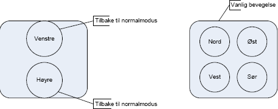
Figur 6.8: «Dra»-modus
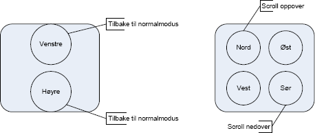
Figur 6.9: «Scroll»-modus
6.4.2 «Dra»-modus
Ved å presse kontinuerlig på knappsensorene istedenfor å bare trykke, bytter man fra normalmodus til andre moduser. Venstre knappsensor bytter til «dra»-modus (fig. 6.8), slik at venstre museknapp holdes nede også når sensoren slippes. Dermed kan tungen flyttes over på bevegelseskinnet for å «dra» pekeren.
«Dra»-modus fungerer ellers som normalmodus; pekeren styres på akkurat samme måte. For å gå tilbake til normalmodus, er det bare å berøre knappsensoren en gang til.
6.4.3 «Scroll»-modus
Høyre knappsensor bytter til «scroll»-modus (fig. 6.9). Man scroller oppover ved å presse på øvre bevegelsessensor, og nedover ved å presse på nedre bevegelsessensor. For å gå tilbake til normalmodus, trykker man på en av knappsensorene.
6.4.4 Drøfting
Andre tilnærming er utførlig testet i kapittel 7. Den viktigste forskjellen fra første tilnærming er «ett-trykk-funksjonaliteten», som hindrer at tungen slites ut selv etter langvarig bruk. Den forbedrede sensorplasseringen motvirker også dette.
Presisjonen er betraktelig bedre takket være den langsommere pekerhastigheten til å begynne med. Disse funksjonene kan kombineres: Ved å trykke fort to ganger, kan man bevege pekeren i små, presise «steg», f.eks. fra ett menyelement til et annet.
«Ett-trykk-funksjonaliteten» gjør det dessuten mulig å snakke mens man bruker musen.
Høyere presisjon er viktig når man har behov for å «dra» pekeren, f.eks. for å flytte vinduer. Å innføre moduser for slik funksjonalitet hever brukerterskelen, men det viser seg enkelt å aktivere og deaktivere «dra»- og «scroll»-modusene. Scrolling er en stor fordel når man surfer på nettet, samt i alle sammenhenger hvor man har behov for å rulle tekst. Disse to modusene gjør funksjonaliteten komplett.
Den største utfordringen er å lære opp tungen til å huske sensorenes plassering på kinnet. Dette blir bedre over tid, men krever litt tålmodighet og innsats.
7 Testing med tungen
Inneholder en grundig test – med resultater – av funksjonaliteten og brukervennlighet til de to tilnærmingene i kapittel 6. Viser at andre tilnærming er en god forbedring av den første. Videre drøfting er gitt i forrige kapittel, avsnitt 6.3.3 og 6.4.4.
7.1 Problemstilling
Det er et behov for å teste om datamusen kan brukes til en dagligdags dataøkt. Testen gjennomføres etter endringer i programmet som påvirker brukerfunksjonaliteten. Testen brukes også for å finne optimal plassering av sensorene på sensorplatene.
7.2 Tester
Når man skal bruke en datamus, har man enkelte krav. Den skal være lett å styre, og den skal være nøyaktig. En økt frran datamaskinen tar gjerne litt tid, så hvor lenge kan man sitte før tungen blir sliten? Hvor god følelse av kontroll oppnår brukeren – oppleves frustrasjon over datamusen under bruk? For å kunne teste dette, er det laget noen enkle tester med stigende vanskelighetsgrad.
Metode:
- Åpne en snarvei fra skrivebordet: velg en snarvei, før musepekeren over den og dobbeltklikk/åpne.
- Åpne en snarvei fra startmenyen: åpne «Start»-menyen og «Programmer». Åpne nå en forhåndsbestemt snarvei fra denne menyen.
- Bruke nettleseren: Åpne Mozilla, gå til en avisside fra «Favoritter» eller hurtigmeny (f.eks. http://www.vg.no/), bla ned på siden og åpne en artikkel.
- Bruk over tid: åpne Microsoft Paint og prøv å tegne en kopi av figur 7.1a. Etter 15 minutter avsluttes testen, og resultatet sammenlignes med originalen. Er resultatet bra, og er tungen sliten? Utfør testen to ganger for å se om det er en liten tilvenningskurve fra brukersiden.
Testen er utført med hodebøylen, men testeren har lagt ekstra trykk bak sensorplatene med hendene. Med en bedre hodebøyle vil dette være unødvendig (se kapittel 10).
7.2.1 Resultater første tilnærming
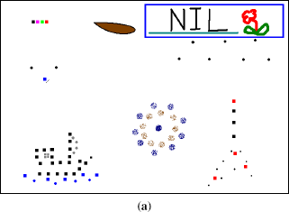
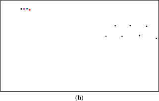
Figur 7.1: Testtegning for bruk over tid (a), resultat i første tilnærming (b), første og eneste forsøk
Se avsnitt 6.3 for detaljer om første tilnærming.
- Åpne en snarvei fra skrivebordet: Musepekeren danser litt over skjermen, men med litt godvilje blir pekeren plassert over den forhåndsvalgte snarveien (Papirkurven). Musebevegelsen går litt for fort, noe som gjør det vanskelig å treffe ikonet. Det føles også litt tungt å holde sensoren inne for å bevege pekeren over skjermen. Holder venstre muspeker inne for å dobbeltklikke.
- Åpne en snarvei fra startmenyen: Merker at det krever mer presisjon og konsentrasjon å gå inn i «Programmer»-menyen. Musepekeren beveger seg litt for fort, noe som fører til at «Start»-meny-grenen til tider lukker seg. Det kommer frem at musen trenger en ny måte å prioritere mellom sensoren(e) som er i bruk på. Det hender musepekeren bytter retning uten at man vil det, og dette føltes ikke behagelig.
- Bruke nettleseren: Velger å åpne nettsiden fra hurtigmenyen, blar nedover ved å trykke nederst på rullefeltet. Det er noe vanskelig å treffe det, savner en scrollfunksjon. Følelsen av kontroll over bevegelsen er også her litt dårlig, men knappene (høyre/venstre) er lette å bruke. Litt tungt å bevege musepekeren rundt på skjermen.
- Bruk over tid: Ga opp etter syv minutter. Ble utrolig hemmet av at pekeren beveget seg for fort, og ble veldig sliten. Resultatet er gitt i figur 7.1b.
For drøfting av resultatene, se avsnitt 6.3.3.
7.2.2 Resultater andre tilnærming
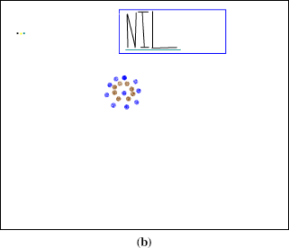
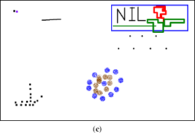
Figur 7.2: Testtegning for bruk over tid (a), resultat i andre tilnærming første forsøk (b), andre forsøk (c)
Se avsnitt 6.4 for detaljer om andre tilnærming.
- Åpne en snarvei fra skrivebordet: Litt vansker med å treffe rett sensor gjør at pekeren til tider beveger seg feil vei. Trykker to ganger på venstre musetast for å åpne den forhåndsvalgte snarveien.
- Åpne en snarvei fra startmenyen: Bruker «ett-trykk-funksjonaliteten» for å bevege pekeren. Ingen problemer.
- Bruke nettleseren: Glimrende. Gjorde speielt mye bruk av «ett-trykk-funksjonaliteten» og scrollfunksjonen, svært behagelig i bruk.
- Bruk over tid: Den delen av tegningen som krever høyest presisjon, blomsten med blad og den dråpeformede figuren, er litt vanskelig. Men av fremskrittet fra figur 7.2b til figur 7.2c ser man at dette kan bli meget bra med litt øvelse.
For drøfting av resultatene, se avsnitt 6.4.4.
8 Prisestimering
Kapittelet inneholder en tilnærming over prosjektets kostnad. Det er også eksempler på pris for egenproduksjon av krets. Prosjektets tilnærmede utgifter er drøyt 2000 NOK.
8.1 Utviklingskostnader
Prosjektet er en bacheloroppgave på HiST. Studentene får ikke lønn under arbeidet, så utgiftene er konsentrert rundt materialkostnadene i tabell 8.1. Sensorene ble kjøpt inn av SINTEF, og AT90USBKey ble kjøpt inn av HiST. Tabellen lister opp antatte kostnader for disse. Prosjektets tilnærmede utgifter er 1949 NOK i materialkostnader. Siden dette er de eneste utgiftene, kan man konkludere med at prosjektet har vært særdeles billig for oppdragsgiver.
Forslag til løskomponenter består av en liste som inneholder overslag over priser en eventuell egenproduksjon av kretsen vil koste. For 100 enheter vil de løse materialene til kretskortet tilnærme en kostnad på 13 518 NOK. Siden kretsen ikke er designet, kan denne prisen avvike noe. Det er ikke laget noen liste for materialpris til produksjon av hodebøylen. Det forventes at designen og materialvalget på denne må utvikles videre (se kapittel 10).
Tabell 8.1: Materialkostnader uten frakt
Produktnavn Produsent Type Antall Enhetspris [NOK] Total pris [NOK] Firma AT90USBKey Atmel Demokrets[11] 2 229 458 Mouser electronics FSR-400 Interlink Trykkfølsom resistans[11:1] 25 23 575 Interlink Electronics FSR-402 Interlink Trykkfølsom resistans[11:2] 25 26 650 Interlink Electronics Veroboard Koblingsbrett 1 59 59 Clas Ohlson Teip Gaffateip 1 79 79 Clas Ohlson Metall 1 Stakepinne 7,6 m 39 39 Jula Metall 2 Spikerbånd 20 × 1 mm 10 m 89 89 Clas Ohlson Koblingsenheter[12] 1 – – HiST Forslag til løskomponenter AT90USB1287 Atmel Mikrokontroller 1 87 87 Mouser electronics AT90USB1287 25 68 1700 AT90USB1287 100 61,182 6118 LP3982IMM-ADJ National Semiconductor Spenningsregulator 10 14,65 146,5 Arrow Electronics LP3982IMM-ADJ 100 5,15 515 LP3982IMM-ADJ 1000 4,25 4250 774-MXO45HS-3C-8.0 CTS Electronic Components Crystal Oscillators 8 MHz 1 19,50 19,50 Mouser electronics 774-MXO45HS-3C-8.0 100 15,24 1524 774-MXO45HS-3C-8. 0 1000 9,966 9996 500075-1517 Molex USB Mini-B vert 1 51 51 Mouser electronics 500075-1517 100 29,43 2943 500075-1517 1000 24,09 24090 Motstander Laveffektmotstander[11:3] 1000 0,0594 59,4 Kretskort To-lags PCB[11:4] 100 21,4 2140 + 278 Microcirtec Kretskort 1000 3,219 3219 + 730 Tabellen benytter seg av omregningene € = 8,7 NOK og $ = 6,6 NOK.
9 Konklusjon
Prototypen som er laget, kan utføre alle standard musefunksjoner i Microsoft Windows, så vel som alle andre operativsystemer.
For kontrollering av musepekeren er det laget en «ett-trykk-funksjonalitet», som hindrer at tungen slites ut etter langvarig bruk. Brukeren starter en bevegelse og stopper eller endrer retning ved ønsket plassering. Under denne funksjonen beveger pekeren seg langsomt til å begynne med for å gi god presisjon.
Man kan snakke mens man beveger musepekeren over skjermen, og det er mulig å be venstre museknapp være aktiv mens man beveger musepekeren over skjermen. Det er også mulig å sette musen i en «scroll»-modus som gjør surfing av nettsider og lesing av dokumenter meget behagelig.
Den største utfordringen er å lære opp tungen til å huske sensorenes plassering på kinnet. Dette blir bedre over tid, men krever litt tålmodighet og innsats.
De utdelte sensorene (FSR-400 og FSR-402) er veldig følsomme, men det kan være vanskelig å få utslag med tungen. Forskning på hvordan sensorene er i kontakt med kinnet kan forbedre dette.
Det ble laget en hodebøyle for å gi riktig plassering av sensorene på kinnet. På grunn av lite bakgrunnskunskap og utstyr, oppfyller ikke hodebøylen alle kravene i produktspesifikasjonen. Sensorene er plassert utenpå kinnene – to store knappsensorer på venstre og fire små bevegelsessensorer på høyre. Prototypen har et problem med at sensorene ligger litt dårlig mot kinnet.
Ved bruk av sensorene er det erfart at det må være et godt press mot kinnet, og de må ligge lengst mulig fram mot munnen for at sensortypen skal kunne brukes i et endelig produkt. Justeringsdelen er også litt vanskelig, men designet har potensial for videreutvikling.
Elektronikken som ble valgt for tolkning av sensordata, er demokretsen AT90USBKey fra Atmel. Denne er basert på mikrokontrolleren AT90USB1287 og fungerte bra til utvikling av en prototype. Kretsen har innebygd åtte ADC-er, hvorav seks blir benyttet til tolking av sensordata. Kretsen gjør bruk av USB-grensesnittet for overføring av data, så vel som energitilførsel. Det er integrert en spenningsregulator som benyttes til å forspenne sensorene. Denne er sterk nok til å forsyne eventuelle tilleggskretser.
Det er laget en boks som omkapsler AT90USBKey («X-box»), fordi demokretsen er for stor til å festes på hodebøylen.
Programkoden er skrevet for å være fleksibel angående antall sensorer og portene de kobles til, så vel som valg av mikrokontroller. Teorien og målingene tilsier at sensorene setter krav til en dynamisk verdi for hendelsesaktivering, og kontinuerlig kalibrering. Dette problemet er løst med programvare.
Programmeringsmessig er det lite som kan videreutvikles, ettersom programmet implementerer alle funksjonene i HID-standarden. Flere funksjoner kan bare implementeres på toppen av det gjeldende grensesnittet, ved å skrive et program eller driver på PC-siden som håndterer signalene på en egen måte. Fordelen med å begrense seg til HID-standarden er at musen ikke krever en egen driver og kan dermed brukes overalt, også på Mac og Linux.
Utgiftene ved prosjektet var minimale, estimert til ca. 2000 NOK.
På bakgrunn av rapporten, konkluderer prosjektgruppen med at det er mulig å lage en tungestyrt musepeker som anvist. Det mekaniske og ergonomiske må imidlertid forbedres for å få et salgbart produkt.
10 Veien videre
Inneholder en oversikt over hva prosjektgruppen mener kan vidreutvikles for enten å forbedre noe som allerede er implementert, eller forslag til hva som kan implementeres.
10.1 Hodebøylen
Hvis man designer et eget kretskort, kan kortets størrelse minskes betraktelig, slik at det kan gjøres plass til det på hodebøylen. Dette vil være mer praktisk framfor å ha et mellomledd som «X-box». Den eneste kabelen fra hodebøylen vil da være USB-kabelen, som settes rett i PC-en. Denne kabelen vil også kunne tas helt av i andre enden. Det vil da være enklere å sette hodebøylen på bruker, og feste USB-kabelen etter at alt av utstyr er på plass.
Det neste vil være å forme platene brukt til justeringsboksen eller ev. hele justeringsboksen. Det vil være ønskelig å kunne sette en «styrke» som skal til for å justere hodebøylen ved behov. Slik som prototypen er nå, er justeringen hard og ikke så brukervennlig. Dette vil være noe som en person med litt bakgrunnskunnskaper om mekanikk/design kan utføre.
Det vil være en forbedring å skjule ledningene som går fra sensorene som er plassert nede på hver side. Disse er på dagens prototype synlige, og veldig sårbare. Et lite rykk i en av disse kan føre til at kabelen mister kontakt med sensor, og musen vil være ubrukelig (noe som for øvrig skjedde under det ene møtet mellom SINTEF og prosjektgruppen).
Det er også et behov å se på metallet som er brukt og alternativer til dette, for å få bedre trykk mot kinnet. Samme metall, men en tykkere utgave kan være en god forbedring.
Sensorplatene til prototypen består av to kretskort som sensorene er teipet til. Dette har vist seg lite slitesterkt, man bør finne en alternativ løsning. Det kan være ønskelig for den enkelte bruker å rotere platene 180–360°, for optimal brukervennlighet. Videre kan det hende at en buet eller fleksibel plate kan fungere bedre som festepunkt til sensorene. Dette kan skape et mer nøyaktig bilde av hvor tungen trykker, og en bedre brukeropplevelse. Det kan være ønskelig med et «mellomlegg» mellom kinnet og sensorene for å kontrolere treffpunktet.
10.2 Elektronikk
Det vil være nødvendig å designe en egen krets rundt AT90USB1287-mikrokontrolleren for eventuell produksjon. Når man først er i gang med dette, kan man se på mulighetene for Bluetooth-implementering i tillegg til USB. Ved å bruke et litium-batteri med laderkrets mot USB, kan produktet lades når det ikke er i bruk, og det vil ikke være nødvendig med batteribytte eller ekstern lader. Om batteriet ikke får ladet lenge nok, bør det være mulig å bruke USB-grensesnittet.
10.2.1 Bruk av batteri som strømforsyning
Den innebygde spenningskretsen på AT90USBKey gjør at den kan forsynes med batterispenninger mellom 8–15 V (DC). Ved normal bruk blir det målt at kretsen trekker mellom 7,5–10 mA med et 9 V batteri tilkoblet. I tilegg kommer Bluetooth-adapteren, som også får spenningsforsyningen fra AT90USBKey. Ved opperasjon vil denne øke forbruket med 18,3 mA, slik at totalforbruket blir ca. 28 mA.
En oversikt over brukertid med ulike batterier tilkoblet kretsen er gitt i tabell 10.1. Det er også mulig å legge en funksjon inn i programkoden som gjør at Bluetooth-modulen går i hvilemodus ved inaktivitet. Funksjoner som ikke er i bruk, vil slås av, og strømforbruket vil falle betraktelig.
Som man kan se av tabell 10.1, gir litiumbatterier overlegen kapasitet fremfor standard NiMh-batterier (nikkel-metalhydrid). For å få samme kapasitet fra NiMh-batterier, vil vekten og størrelsen disse krever gjøre det vanskelig å integrere kretsen på hodebøylen. Ulempen med litiumbatterier er at de krever en dedikert lader, og at de kan eksplodere ved overoppheting/belastning.
En liten innebygd krets hindrer at batteriet blir utladet under en gitt spenning, og ved ladning fungerer den samme kretsen slik at batteriet ikke skal overlades. Uten denne ville batteriet ha blitt ødelagt.
Tabell 10.1: Teoretisk operasjonstid med ulike batterityper
Batteritype Spenning [V] Kapasitet [mAh] Belastningsstrøm [mA] Operasjonstid [h] Vekt [g] HR6F22 Ni-MH 8,4 200 30,0 6,7 39 6F22 Litium[13] 9,0 500 28,0 17,9 28 U9VLJ10 Litium[13:1] 9,0 1200 28,0 42,9 38 AAA Ni-MH 8x serie 8 × 1,2 1000 26,3 38,0 8 × 16 AA Ni-MH 8x serie 8 × 1,2 2700 26,3 102,7 8 × 30
10.2.2 Bluetooth
For eventuell trådløs dataoverføring kan det benyttes Bluetooth som overføringsprotokoll. Dette vil f.eks. gjøre det enklere for brukeren å koble seg til en annen datamaskin når dette først er konfigurert. Datamaskinen vil da automatisk kjenne igjen den virtuelle armen og vil av den kunne vekkes fra en eventuell dvalemodus.
Teknologien benytter seg av radiofrekvensbåndets 2,4 GHz-område og har en rekkevidde på ca. 10 m. Overføringshastigheten ligger på ca. 1,0 Mb/s. Da det benyttes radiobølger, vil brukeren ikke hindres av at objekter i veien hindrer signalet. For å øke båndbredden og sikkerheten, benytter Bluetooth seg av frekvens-hopping (Frequency Hopping Spread Spectrum, FHSS). Dette fungerer ved at sender og mottager «hopper» fra frekvens til frekvens hele tiden etter et bestemt mønster, i frekvensområdet 2,402 GHz til 2,480 GHz [Bluetooth]. En ulempe ved bruk av denne teknologien som brukergrensesnitt, er at det kan oppstå forsinkelse hvis datamaskinen belastes med parallelle oppgaver. Siden kretsen ikke lenger vil være tilkoblet USB, må den få strømtilførsel fra et batteri eller annen ekstern strømforsyning, som beskrevet i kapittel 5 og kapittel 10.2.1.
Bibliografi
[Bluetooth] http://www.bluetooth.com/Bluetooth/Technology/Works/.
[Vedlegg 1] Programkode, dokumentert.
[Vedlegg 2] Datablad for Interlink-sensorer.
[Vedlegg 3] Datablad for AT90USBKey.
[Vedlegg 4] Datablad for mikrokontrolleren.
Bilag: CD
Vedlegg 1–4 foreligger på CD, organisert som følger:
Vedlegg 1: Programkode
Plassert i mappen /Program. Lisens for Atmel-kode har plasseringen /Program/at90usb128/demo/series6-hidmouse/LICENSE.txt.
Vedlegg 2: Datablad for Interlink-sensorer
Plassert i mappen /Datablader/Trykksensorer.
Vedlegg 3: Datablad for AT90USBKey
Plassert i mappen /Datablader/Kretskort.
Vedlegg 4: Datablad for mikrokontrolleren
Plassert i mappen /Datablader/Mikrokontroller.
-
Nettside: http://www.interlinkelectronics.com/. ↩︎
-
Lar målearmen ligge for å holde trykkområdet konstant. Vekten på armen er så liten at sensorene påvirkes minimalt av denne, se kapittel 2.2.1. ↩︎
-
http://www.atmel.com/dyn/products/tools_card.asp?tool_id=3879. ↩︎
-
Lisensen for den medfølgende programvaren til Atmel er gitt i
LICENSE.TXTi [Vedlegg 1]. ↩︎ -
Standard 100 mA, maksimalt 500 mA etter forespørsel. ↩︎
-
Festemekanismen kan videreutvikles, se kapittel 10. ↩︎
-
Man kan klare seg med færre dersom man bruker ulikt trykk for ulike retninger, men kapittel 2 antyder at dette blir vanskelig. ↩︎
-
Dette gjøres ved å slå opp i en matrise som inneholder informasjon om hvilke sensorer som er i nærheten av hverandre. Hvis sensoren for bevegelse oppover er i bruk, for eksempel, ønsker vi bare å undersøke sensorene for bevegelse til venstre og høyre, ikke sensoren for bevegelse nedover. ↩︎
-
Dette gjør vi i andre tilnærming. ↩︎
-
Skruer/muttrer/ledninger og lignende. ↩︎
-
Tilpasset lader må anvendes for lading av litiumbatterier. ↩︎ ↩︎